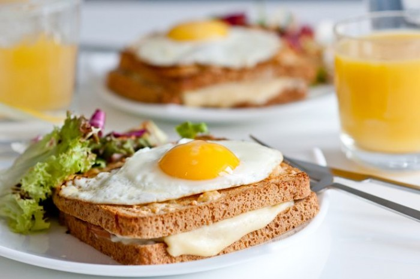
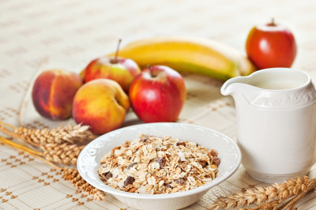
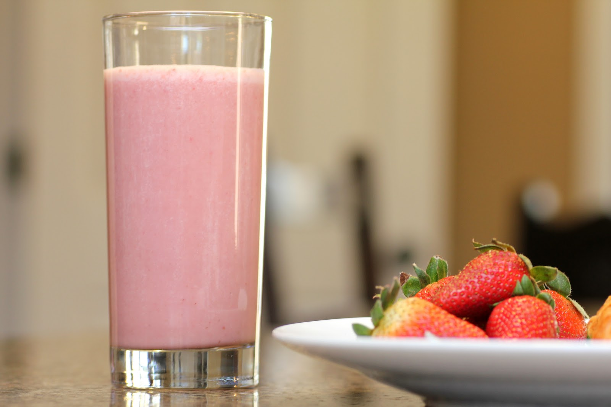

Breakfast MealsWhole wheat bread with Eggs and GuacamoleBreakfast is the most important meal of the day so you have to make sure you eat healthy, enough and well. Make sure you eat at least two to three eggs for breakfast and a whole wheat bread and a orange juice, the guacamole is for the fiber ( which is very important in your diet).
Oatmeal and Apples can be added to your breakfast too, it has the nutrition you need and is fast to make, Apple can improve your metabolism and can keep you up with the natural sugar it provides.
This is one of the best meals, Grilled Chicken, Brown rice and Broccoli. The perfect combination of a healthy food. The Broccoli provide the fiber which is very important , the Brown Rice the Carbohydrate and the chicken. I recommend eating this before and after the gym.
Protein shakes is one of the easiest meal for someone with a busy schedule and is fast to digest, you can also drink it before bed, I personally recomment a good and clean Protein shake with at least 40grams of Protein in it and make sure is high in Carbohydrates. You wont be able to get all the nutrition you need during.